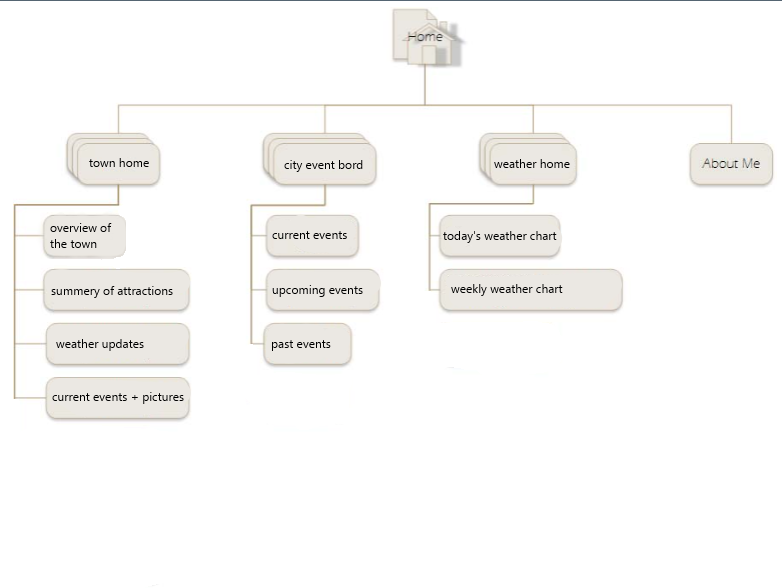

Site description
The weatherahead.com website is a website dedicated to a small town. Its main content is weather related information, but it also has promotions and town news.
Weatherahead
This site is going to be called Weatherahead.com. It is a small home town's home page, focoused mainly on weather forcasts.
weatherahead.com's purpose
The purpose of this website is to give daily updates of a small town's weather, events, and pictures to advertize the town's attractions. This town is known for its tornadoes, so storm chasers are frequent tourists.
